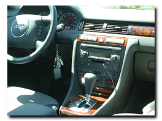

..*..*.. 2004年11月6日(土) 晴れ ..*..*..
ときどき、私のミニと交換して、私がオールロードに乗るんだけど、周りの人がとてもよく関心を示してくれます。「見た目が美しい」「きれいな形」などとほめてくれるし、内装や造りもかなり凝っていて、乗り心地もいいです。 なんと言っても興味を惹くのは、この車は、高さが4段階に切り替えられるんです。止まっているときに切り替えると、少しずつ高さが変わっていくのがわかるのです。もちろん、走行中にも切り替えできます。一番高くすれば、SUV(スポーツユーティリティ車)になるし、早く走りたいときは車高を下げれば安定します。ボタンひとつで上がったり下がったりするのって面白いですよね。 下の写真は、左側が低いとき、右側が高いときです。ずいぶん違うでしょう？写真の撮り方がちょっとへたですが(^^ゞ
左の写真の通り、内装の部分は木目になっています。 他にも、ざっと気がついた点をあげると、 + 速度の遅いときはハンドルが軽く、早くなると重くなる。----- これって安全対策でもあるんですね。早くスピード出してるときにハンドルが軽いと危ないですものね。以前チェロキーに乗っていた私は、チェロキーのときもずいぶん軽いと思ったのですが、オールロードの軽さにはびっくりしました。 + ヒーターの温度が運転席と助手席で違う温度に設定できる。----- これって、特に女の人は感動しますね。いっしょに乗っている人に合わせると、どうしても自分ががまんしなくちゃいけない部分があったりするでしょう。別々の温度に設定できるのって、すごく居心地がいいですね。 + 運転するときの椅子とサイドミラーの位置を覚える機能がある。----- 人と運転を交代するのって、なんだか面倒になってしまうのですが、これならボタンひとつで変更できて便利です。 + 運転中自分がどこへ向かって走っているかがわかる。----- ミラーに方角が出ます。最近はこういう車が多いですね。 + 椅子が暖まる。----- 乗ってすぐに暖かくなるので喜ばれます。 + なんと、救急セットがついていた。 + ムーンルーフ。 + あと、私が気に入ってるのは、ラジオの音楽が流れるときにタイトルと歌っている人が表示されること。 他にも専門的にはいろいろありますが、私のわかる範囲で書いてみました。 |